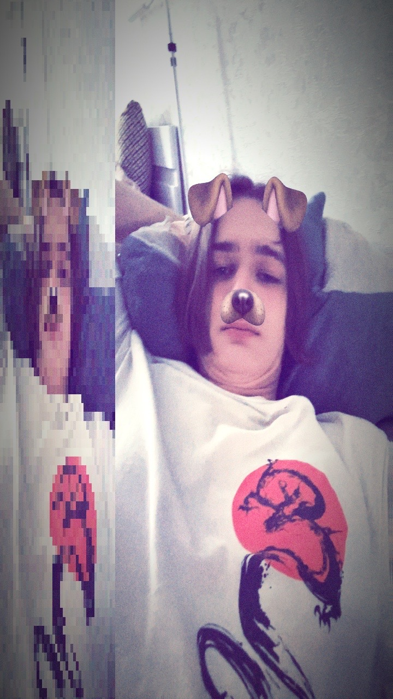
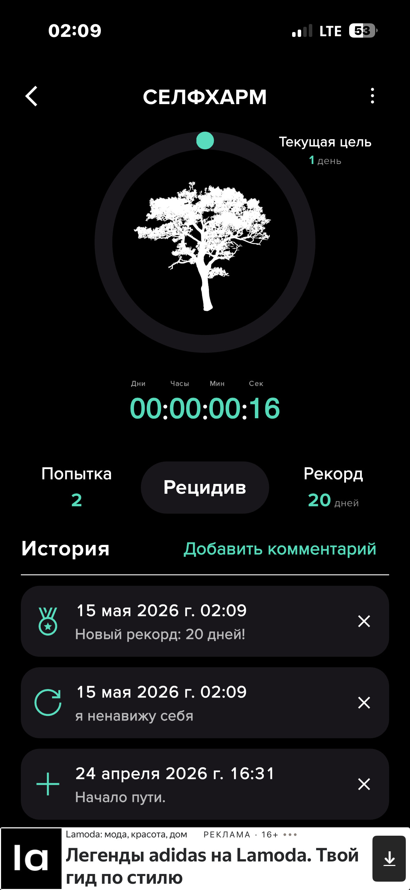

Тимофей, 17
Не занимаюсь ничем интересным. Увлекаюсь программированием, игрой в КС и читкой.
Ищу кого-то, с кем можно гнить дома, а потом резко пойти гулять ночью.
О себе
Имею богатую историю психических заболеваний. Был зависим от гашиша, шишек и аптеки,
совершал самоповреждающие действия. Этим не горжусь, но считаю важным сказать сразу.
От наркотиков чист уже год, от селфхарма — чуть меньше месяца(рецидив).

Чем живу
Бесконечным гниением в интернете. Читаю и смотрю интересующие темы,
но вместо чего-то нового предпочитаю пересматривать любимые аниме в сотый раз.
Кого ищу
Человека с хотя бы минимальным уровнем эмпатии и желанием быть вместе —
дружба или отношения, не важно. Просто устал быть один.